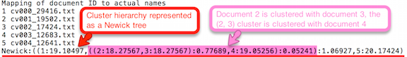
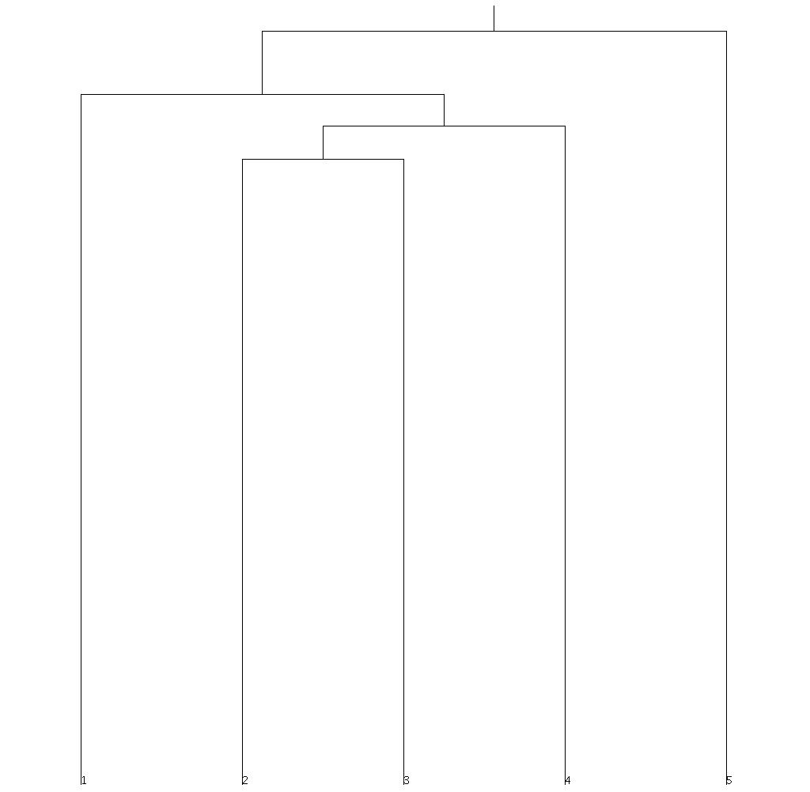

| Method Overview |
| Hierarchical clustering (Johnson, 1967) refers to a subset of algorithms that identify the optimal number of clusters in a dataset by starting with the assumption that all data points (in this case documents) belong to one cluster. The algorithm then splits this root cluster into smaller child clusters based on the degree of similarity between the documents. These child clusters are recursively divided further until only singleton clusters remain. Besides providing a .txt file with cluster membership information, TACIT also provides the option to visualize the clusters in a dendrogram, which presents an hierarchical view of the clusters and their relations. |
| Basic Tutorial: Using TACIT Hierarchical Clustering Tool |
| The Hierarchical Clustering Tool can be used to identify clusters of related documents within a corpus. Identifying clusters is useful for understanding relationships between documents and can also serve as an intermediary step in a sequence of analyses. |
| Specifying Input Files for Analysis |
| All input data files must be saved as corpus classes (subgroups) within a corpus in Corpus Management or as .txt files within separate folders to be compatible with TACIT.
See the Corpus Management Help Section if you need to convert files to compatible formats.
To specify which classes/groups you would like to compare in analysis, select Add Corpus or Add Folder under the Input Details panel. All corpora and folders added to the Input Details panel are automatically selected to be included in analysis by the check mark box to the left of the corpus/file/folder name. The number of files selected for analysis is indicated at the bottom of the input panel. To de-select an unwanted folder or file, uncheck the box next to its name. Add Corpus: The Add Corpus button will allow you to add a group/class from a corpus stored in Corpus Management. Add Folder: The Add Folder button will allow you to add a folder as a subgroup for analysis. Add File(s): The Add Files button will allow you to add .txt files to be included for analysis. Multiple files within the same folder can be selected at the same time using standard multi-select functions. |
| Additional Options |
| The Hierarchical Clustering Tool offers two optional parameters: Preprocess and automatic Dendogram visualization. To implement either of these options, select their adjacent check-boxes prior to analysis. |
| Specifying Output Path |
| To specify an output folder where the output from an analysis will be saved, click on the Browse button to the right of the Output Location bar and select a folder.
If you create a new folder within this menu and change its name from "New Folder", click on any other
folder and then click back on your newly created & renamed folder to select it. After specifying all parameters,
click the green and white play button (Image 1) located in the top right corner of the window to run the program.
Output information will display in the console panel at the bottom of the tool.
Image 1. Run button location 
|
| Understanding Hierarchical Clustering Output |
| The Hierarchical Clustering Tool automatically generates two output files, a run report and the cluster structure.
If the dendogram visualization option was activated, a dendogram will also be generated.
The file names include the type of technique used for analysis and the time stamp for when the analysis was completed.
The cluster structure report, which is generated as a .txt file, specifies the hierarchical structure of the cluster and the degree of difference between the cluster's leaves and nodes. In TACIT's implementation of hierarchical clustering, each document is represented as a tf-idf vector and the difference between documents is measured by calculating the Euclidian distance between their vectors. In the cluster structure report, each document is assigned an ID that ranges from 1 through N where N equals the number of documents included in the analysis. The structure of the clusters is then represented in a parenthetical list format called a Newick tree. In addition to specifying the hierarchical structure, the Newick tree also lists the distance measure for each component of the cluster. The Newick tree refers to each document using the document's assigned ID number. Each document ID is followed by a colon and the distance of the document from the document or cluster of documents contained in the same parenthetical area. Thus, the Newick tree (1:5.6,2:5.6) shows that the Euclidian distance between documents 1 and 2 is 5.6. The Newick tree also shows the distance between sub-clusters of documents (nodes) and documents. For example, (1:3.0,2:3.0):1.0,3:4.0) indicates that documents 1 and 2 have a distance of 3.0 and the distance between the (1,2) node and document 3 equals 4.0 (note, this distance is listed after document 3 and it can be arrived at by adding the distance between documents 1 and 2 and the distance measure listed after the (1,2) node). For another example, consider the following structure, which is the same as that shown in Image 2: ((1:19.10497,((2:18.27567,3:18.27567):0.77689,4:19.05256):0.05241):1.06927,5:20.17424) The innermost parenthetical structure contains documents 1 and 2 and their distance is 18.27567. The next level shows that document 4 is the closest to the (2,3) node and that the distance between document 4 and the (2,3) node is 19.05256. The next level shows that document 1 is the closest to the (2,3,4) node and that the distance between document 4 and the (2,3,4) node is 19.10497. The final level contains document 5 and shows the distance between document 5 and the node containing the other documents; the distance is 20.17424. Image 2. Example Hierarchical Cluster Analysis Output  The dendogram that TACIT can generate is a visualization of the cluster calculated by the Hierarchical Clustering Tool (Image 3). The height of each branch is determined by the Euclidian distance measure associated with the branch in the cluster structure report. Image 2 shows the dendogram generated from the report shown in Image 1. Image 3. Example Dendogram  |